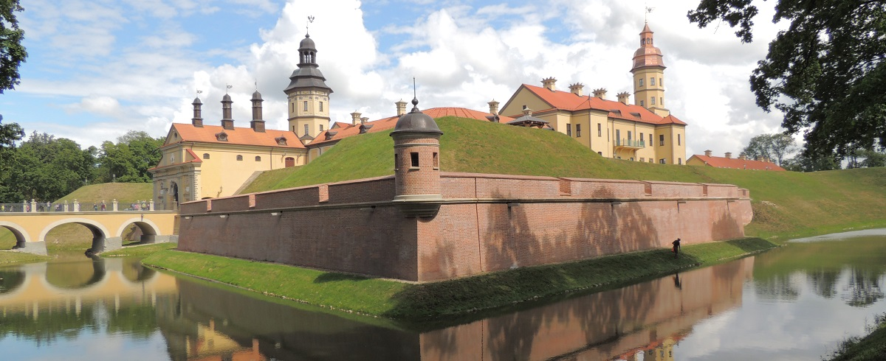

Национальная культура белорусов уходит своими корнями в глубокую древность. В ней заключены колоссальные духовные богатства, отражающие нравственное, эстетическое, интеллектуальное бытие белорусского народа. За многовековую историю белорусским народом сформировано богатое и самобытное культурное наследие. Беларусь владеет значительным историко-культурным потенциалом, представленным объектами архитектуры, искусства, музейными коллекциями. Сохранившиеся до наших дней шедевры белорусского искусства находятся под защитой государства. Они хранятся в коллекциях крупнейших белорусских музеев, собраниях библиотек. Наиболее значимые материальные ценности включены в Государственный список историко-культурных ценностей Беларуси.
Городской поселок Мир (Кореличский район). Вид на Мирский замок
Первые города на территории Беларуси возникли в период раннего средневековья. Древнейшие из них – Полоцк (862 год) и Витебск (974 год). В X-XII веках сформировались основы градостроительства, развивалась монументальная архитектура (Полоцкий Софийский собор, Полоцкая Спасо-Евфросиньевская церковь, Витебская Благовещенская, Гродненская Борисоглебская (Каложская) церкви).
В XIII веке на территории Беларуси наибольшее распространение получило оборонное зодчество. В разное время на белорусских землях существовало не менее 150 замков. Восстановленные и отреставрированные Каменецкая вежа, дворцовый комплекс в городском поселке Ружаны Пружанского района, Старый замок в Гродно, замок в Лиде, замковый комплекс в городском поселке Мир Кореличского района, замок в городском поселке Любча Новогрудского района, дворцово-парковый ансамбль в Несвиже многое могут рассказать о белорусской истории.
Для архитектуры Беларуси характерна тесная взаимосвязь с западноевропейским и восточноевропейским искусством. Основные направления - романский стиль, готика, ренессанс, барокко (Несвижский костел Божьего Тела, Глубокский костел и монастырь кармелитов), классицизм (Гродненский Королевский дворец, Гомельский дворец Румянцевых-Паскевичей).
Сегодня памятники древней архитектуры сохраняются и экспонируются в археологическом музее «Берестье» (Брест), народного зодчества – в Белорусском государственном музее народной архитектуры и быта (под Минском).
В годы Великой Отечественной войны значительная часть архитектурных сооружений была разрушена, только в Минске уничтожено около 80 процентов зданий. С 1944 года были проведены большие работы по восстановлению городов и сел. Выросли новые города - Новополоцк, Светлогорск, Солигорск.
В послевоенный период созданы мемориальные комплексы Брестская крепость-герой, Курган Славы Советской Армии - освободительницы Беларуси близ Минска, «Хатынь» и другие.
Одним из ярких примеров современной белорусской архитектуры является здание Национальной библиотеки Беларуси - «алмаз», аналогов которому в мире нет.
Выставка «Марк Шагал: жизнь и любовь» в Национальном художественном музее.
В художественных музеях Беларуси можно увидеть произведения искусства различных эпох. Самая большая коллекция живописи и скульптуры находится в Национальном художественном музее Беларуси.
На протяжении веков в Беларуси развивались монументальная живопись (фрески Софийского собора, Бельчицкого и Спасо-Евфросиньевского монастырей в Полоцке, Борисоглебской (Каложской) церкви в Гродно), книжная миниатюра. Шедевром древнебелорусского эмальерного искусства стал крест, сделанный в 1161 году ювелиром Лазарем Богшей по заказу Евфросинии Полоцкой. В XV веке зародилась светская живопись, около XVI - белорусская иконописная школа. С распространением книгопечатания стала развиваться книжная ксилография.
Из ткаческих мануфактур XVII-XVIII веков большую известность приобрели Кореличская, где изготавливали отличавшиеся высоким художественным уровнем шпалеры, и Слуцкая, прославившаяся своими ткаными из шелковых, золотых и серебряных нитей поясами.
В конце XVIII-XIX веках белорусская живопись развивалась в русле романтизма и классицизма, позднее - реализма. К этому периоду относятся работы Я.Дамеля, Я.Суходольского, А.Ромера, И.Хруцкого, К.Бахматовича, В.Ваньковича, С.Зарянко, И.Олешкевича, Н.Орды, А.Бартельса и других.
Культурное поле ХХ века включает в себя такие имена, как М.Шагал, К.Малевич, Ю.Пэн. Художники М.Филиппович, Р.Семашкевич, В.Бялыницкий-Бируля, В.Цвирко, Г.Ващенко, В.Громыко, М.Данциг, П.Маслеников, М.Савицкий, скульптуры А.Бразер, А.Грубе, М.Керзин, 3.Азгур, П.Белоусов, А.Бембель, А.Глебов, С.Селиханов и многие другие внесли большой вклад в развитие белорусского искусства.
В декоративно-прикладном искусстве ведущие позиции занял гобелен. «Гобелен века» работы А.Кищенко официально признан самым большим гобеленом в мире и занесен в книгу рекордов Гиннесса.
Современному изобразительному искусству Беларуси свойственно разнообразие. Утверждают себя фотоискусство, арт-дизайн, искусство акций, компьютерная графика, расширяется жанрово-видовой спектр. В ХХI веке художественная школа Беларуси доказала свою способность к развитию, сохранила цельность, продолжила освоение прогрессивных элементов мировой культуры.
В исторической части Витебска - на улицах Суворова и Крылова - проходят съемки фильма о Шагале
17 декабря 1924 года было создано Белгоскино. С этого дня ведет отсчет своей истории национальный кинематограф. Первым белорусским художественным фильмом была историко-революционная картина «Лесная быль». Поставил ее по повести Михася Чарота «Свинопас» в 1926 году режиссер Юрий Тарич. Его считают основателем белорусской кинематографии. Ученики Тарича – Владимир Корш-Саблин и Иван Пырьев – стали знаменитыми кинематографистами.
В 1930 году началось производство звуковых фильмов. В 1939 году студия получила собственную производственную базу в Минске.
В довоенное время с большим успехом прошли снятые на белорусской киностудии кинокомедии «Поручик Киже», «Девушка спешит на свидание», «Искатели счастья», «Моя любовь», экранизация рассказов А.Чехова «Медведь», «Человек в футляре».
В 1954 году на киностудии снят первый цветной художественный фильм - «Дети партизана», в 1970 - первый широкоформатный «Крушение империи». Своего расцвета национальный кинематограф достиг в 1950-70-е годы. Именно в это время были созданы фильмы, вошедшие в золотой фонд белорусского кино: «Константин Заслонов», «Красные листья», «Часы остановились в полночь», «Девочка ищет отца», «Москва – Генуя», «Я родом из детства», «Альпийская баллада», «Третья ракета», «Город мастеров» и другие. Тогда были сняты фильмы для детей и юношества, ставшие классикой: «Бронзовая птица», «Последнее лето детства», «Приключения Буратино», «Про Красную Шапочку», «Удивительные приключения Дениса Кораблева».
Широкое признание у зрительской аудитории получили белорусские телесериалы «Руины стреляют…», «Долгие версты войны», «Государственная граница», «Отцы и дети».
Плодотворно развивалось и документальное кино, которое создавалось в творческом объединении «Летопись».
Современные мастера с успехом продолжают творческую эстафету предыдущих поколений. Только за последние годы призами и наградами различных фестивалей отмечены созданные в Беларуси фильмы «Анастасия Слуцкая», «Поводырь», «Дунечка», «В августе 44-го», «Брестская крепость», «В тумане». В русле общемировой практики на «Беларусьфильме» все чаще осуществляются творческие проекты по совместному созданию фильмов с кинематографистами России, Германии, Израиля.
ХХ Минская международная книжная выставка-ярмарка Основных своих успехов белорусская литература достигла в XX веке, но без подвижнической деятельности писателей предшествующих столетий эти свершения были бы более скромными.
Истоки белорусской литературы лежат в устно-поэтическом творчестве и фольклоре. Литература зародилась с приходом письменности в Х веке. Крупнейшим центром распространения письменности был Полоцк, где в XII-XIII веках появилось местное летописание. В Турове жил и творил мастер ораторской прозы Кирилл Туровский. В XIV–XV веках белорусский язык получил статус государственного в Великом княжестве Литовском, на нем были написаны Статуты ВКЛ 1529, 1566 и 1588 годов. XVI век ознаменован деятельностью белорусского гуманиста-просветителя, основателя восточнославянского книгопечатания, писателя и переводчика Франциска Скорины. Первую ренессансную поэму на латинском языке о родной земле «Песня о зубре» написал М.Гусовский. Публицист и переводчик С.Будный издал в Несвиже «Катехизис» - первую книгу на старобелорусском языке на территории современной Беларуси. Защитник родного слова В.Тяпинский первый перевел на белорусский язык Евангелие. Свой вклад в развитие белорусской книжной поэзии в XVII веке внес Симеон Полоцкий.
Становление новой белорусской литературы пришлось на вторую половину XVIII-XIX века. В XIX веке белорусскую землю прославляли поэт А.Мицкевич, драматург В.Дунин-Марцинкевич. Эпоха реализма связана с расцветом творчества Ф.Богушевича, А.Гуриновича и Я.Лучины.
Важную роль в развитии белорусской литературы сыграли первые легальные газеты на белорусском языке "Наша доля" и "Наша ніва", вокруг которых объединились самые известные авторы того времени: Я.Купала, Я.Колас, Э.Пашкевич, М.Богданович, З.Бядуля, М.Горецкий, Ядвигин Ш. и другие.
Белорусская литература ХХ века представлена выдающимися именами народных поэтов Я.Купалы, Я.Коласа, Р.Бородулина, П.Бровки, Н.Гилевича, А.Кулешова, П.Панченко, М.Танка, народных писателей В.Быкова, Я.Брыля, К.Крапивы, М.Лынькова, А.Макаенка, И.Мележа, И.Науменко,И.Чигринова, И.Шамякина. Их произведения, а также многих других поэтов, писателей, драматургов за относительно короткий период поставили белорусскую литературу в один ряд с передовыми литературами мира.
Концерт трех оркестров в Белгосфилармонии Музыкальное искусство Беларуси берет свое начало в народной музыке восточных славян. Значительную роль в быту белорусской деревни издавна играла инструментальная музыка. Среди любимых народных инструментов - дуда, жалейка, гудок, лира, скрипка, цимбалы. В Беларуси большое развитие получила церковная богослужебная музыка. Музыкальными памятниками XV-XVII веков являются сборники вокально-инструментальных произведений "Полоцкая тетрадь" и "Куранты". В XVIII веке центрами музыкальной культуры становятся частные театры и капеллы магнатов Радзивиллов, Сапег, Огинских и других. Среди известных композиторов - Я.Голланд, Э.Ванжура, М.Радзивилл.
В современной Беларуси большой популярностью пользуется творчество ведущих музыкальных коллективов страны: Президентского оркестра Республики Беларусь, Государственного академического симфонического оркестра, Государственной академической хоровой капеллы им. Г.Ширмы. Артисты Национального академического Большого театра оперы и балета Республики Беларусь, Белорусского государственного академического музыкального театра, Белорусской государственной филармонии покоряют зрителей самобытным талантом и высочайшим исполнительским мастерством. Белорусское музыкальное искусство прославили выдающиеся композиторы С.Монюшко, Г.Вагнер, В.Мулявин, И.Лученок, Э.Ханок, Д.Смольский, О.Елисеенков и другие.
Значительную работу по развитию музыкальной культуры проводит Национальный академический оркестр симфонической и эстрадной музыки под руководством Михаила Финберга. Организация фестивалей камерной музыки в малых городах Беларуси является одним из важнейших направлений деятельности оркестра. Визитной карточкой Беларуси можно по праву считать вокальную группу «Чистый голос», вокально-инструментальные ансамбли «Песняры» и «Сябры». Ежегодно в Беларуси проводятся более 30 международных, республиканских и региональных музыкальных фестивалей, среди них "Белорусская музыкальная осень", "Минская весна", "Славянский базар в Витебске", "Музы Несвижа".
Белорусские исполнители регулярно участвуют в престижных международных конкурсах. Современное белорусское музыкальное искусство стремится сохранять богатые национальные традиции. Театр Национальный академический Большой театр оперы и балета Белорусское сценическое искусство зародилось из древних народных обрядов, творчества бродячих музыкантов и актеров-скоморохов. В XVI веке возник кукольный театр - батлейка, который давал представления на ярмарках и площадях в городах и местечках. В XVI–XVIII веках начали распространяться школьные театры, в XVIII веке - придворные и городские театры. Некоторые из них со временем преобразовались в профессиональные труппы.
Основоположником национального театра называют белорусского драматурга XVIII века В.Дунина-Марцинкевича. Возрождение белорусского сценического искусства происходило в начале XX века. Фундамент закладывали драматурги К.Каганец, Я.Купала, Я.Колас, К.Буйло, Ф.Олехнович, Л.Радевич и другие. Театральную работу вели И.Буйницкий, А.Бурбис, Ф.Жданович.
В 1920 году Ф.Жданович организовал Белорусский государственный театр (БГТ-1; ныне Национальный академический театр имени Я.Купалы). В 1926 году начал работу в Витебске БГТ-2 (ныне Национальный академический драматический театр имени Я.Коласа).
Для жителей и гостей республики работает 28 профессиональных театров, из которых 19 - драматических и музыкальных, 8 - детских и юного зрителя, 1 - оперы и балета. В их репертуаре произведения белорусских авторов, постановки русской, советской и зарубежной классики. Четыре театра в Беларуси имеют статус «национальный»: это драматические театры Я.Купалы, М. Горького (Минск), Я. Коласа (Витебск) и театр оперы и балета.
Среди мастеров сцены, плодотворно работавших и работающих в белорусских театрах, - Г.Макарова, С.Станюта, 3.Стомма, Г.Овсянников, Л.Давидович, 3.Белохвостик, А.Климова, Р.Янковский, Г.Гарбук, М.Захаревич, В.Тарасов, А.Милованов, В.Манаев, А. Помазан, режиссеры В.Раевский, Б.Луценко, Н.Пинигин, В.Мазынский, В.Маслюк, сценографы Б.Герлован, Д.Мохов, 3.Марголин и многие другие.
В Беларуси регулярно проводятся фестивали, конкурсы, смотры сценического искусства, среди них "Славянские театральные встречи" в Гомеле, "Белая вежа" в Бресте, "Панорама" в Минске, "М.арт.контакт" в Могилеве. В 2011 году была впервые установлена Национальная театральная премия Беларуси.